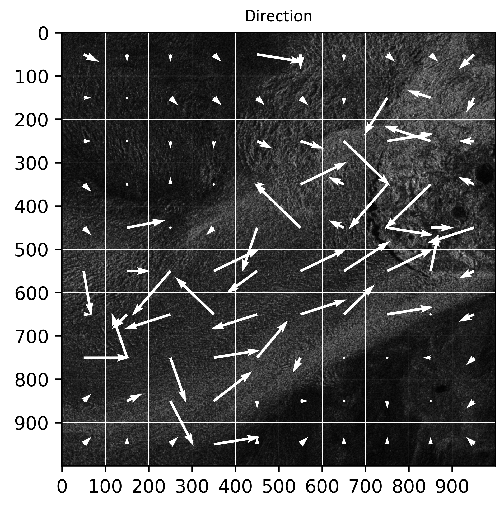

PRELUDIUM 21
Table of contents
Nowe spojrzenie na badanie kinematyki lodowców w kontekście globalnych zmian klimatycznych
Cel projektu oraz jego znaczenie
Celem projektu jest opracowanie nowej metody monitorowania ruchów lodowców z wykorzystaniem danych SAR i uczenia maszynowego. Łącząc technikę Offset-Tracking (OT) i DInSAR z obrazami SAR o wysokiej rozdzielczości, przeanalizuje zmiany w kinematyce lodowca, wykryje anomalie i oceni trendy prędkości na Grenlandii i Svalbardzie. Badania obejmują testowanie algorytmów uczenia maszynowego w celu optymalizacji oceny przemieszczeń, a następnie analizy porównawcze z wykorzystaniem oprogramowania GIS. Ostatecznym celem jest zapewnienie dokładniejszego i skuteczniejszego sposobu monitorowania zachowania lodowców i zmian środowiskowych.
Plan badań
Zadanie 1. Zbieranie satelitarnych obrazów radarowych dla wybranych obszarów badawczych
Badania będą prowadzone na grupach lodowców w dwóch głównych regionach: Grenlandii i Svalbardu. Na Grenlandii uwaga zostanie zwrócona na zachodnie wybrzeże, w szczególności na następujące lodowce: Jakobshavn (najwyższe prędkości na Grenlandii), Sermaq (występowanie basenów zapadliskowych) i Petterman (problemy hydrologiczne z rzekami, które destabilizują lodowiec). Lodowce Nathorstbreen, Kronebreen i Hansbreen będą szczególnie badane w regionie Svalbard, który charakteryzuje się mniejszymi prędkościami w porównaniu z Grenlandią. Zbierane będą obrazy radarowe z satelity Sentinel-1, ponieważ są one dostępne bezpłatnie i w regularnych odstępach czasu. Ponadto, w zależności od dostępności danych, planowane jest wykorzystanie zestawów danych o wysokiej rozdzielczości z dobrze znanych (Cosmo-SkyMed, TerraSAR-X) lub nowo opracowanych misji SAR (ICEYE, RCM, Capella Space lub NISAR), które mogą być przydatne na obszarach o wolniejszych ruchach lub mniejszym zasięgu przestrzennym.
Zadanie 2. Przetwarzanie danych SAR z wykorzystaniem klasycznych metod obliczeniowych
W drugim etapie zebrane zbiory danych SAR zostaną przetworzone za pomocą takich metod jak DInSAR i OT w celu uzyskania informacji o polu przemieszczenia w wybranych regionach. Dodatkowo, obliczenia zostaną ulepszone poprzez wykorzystanie pola przesunięcia do poprawy analizy DInSAR w celu wykrycia lokalnych deformacji. Podejście to znajduje zastosowanie w obszarach trzęsień ziemi, jednak nie jest powszechnie stosowane w monitorowaniu lodowców. W rezultacie informacje o przemieszczeniach poziomych i LOS zostaną uzyskane dla każdego obszaru badawczego.
M1 – pierwszy kamień milowy: charakterystyka pola przemieszczeń pozyskana na podstawie danych SAR
Zadanie 3. Tworzenie nowego algorytmu w oparciu o uczenie maszynowe
Wstępnie przetworzone dane SAR zawierające informacje fazowe, spójność, amplitudę sygnału i współczynnik rozproszenia wstecznego zostaną wykorzystane jako dane wejściowe do testowania różnych modeli ML i jako efekt do stworzenia optymalnego algorytmu wykrywania pełnego pola przemieszczenia. Różne modele ML i ich parametry zostaną przetestowane w celu uzyskania najlepszej jakości wyników. Każdy model zostanie oceniony na podstawie statystyk obliczonych po każdej epoce.
Zadanie 4. Zbieranie danych referencyjnych oraz ich analiza
Zbierane i analizowane będą informacje o lodowcach z niezależnych baz danych. Na obszarze Grenlandii zbadane zostaną następujące bazy danych: MEaSUREs, CPOM Near Real-Time i Promice. W przypadku Svalbardu zbadane zostaną trzy zbiory danych: z Uniwersytetu w Oslo, norweskiego serwisu Copernicus Glacier oraz Polskiej Bazy Danych Polarnych ze stacji polarnej Hornsund. Bazy te zawierają różne informacje, takie jak prędkość, pozycja końcowa, bilans masy lub pomiary in situ z lasek ablacyjnych lub stacji meteorologicznych. Część tych zbiorów danych zostanie wykorzystana do analizy dynamiki lodowców, natomiast część danych zawierających informacje o prędkościach lub przemieszczeniach posłuży do sprawdzenia poprawności nowo opracowanej metody.
Zadanie 5. Walidacja nowego algorytmu
Na tym etapie wyniki uzyskane przy użyciu standardowego podejścia i nowej metody zostaną porównane z wartościami ruchu z niezależnych baz danych. W przypadku braku danych, jako punkt odniesienia wykorzystane zostaną wyniki klasycznych obliczeń. W rezultacie wybrany zostanie najlepszy algorytm i przygotowany do wykorzystania w dalszych badaniach, w tym długoterminowej analizie przemieszczeń.
M2 – drugi kamień milowy: zbudowany oraz zwalidowany algorytm
Zadanie 6. Analiza dynamiki wybranych lodowców
Narzędzia stworzone w Zadaniu 5 pozwolą na długoterminową analizę dynamiki lodowców. Pełne pole przemieszczeń zostanie przeanalizowane w długich okresach czasu, aby określić, jak wybrane lodowce zmieniają się w czasie. Szczególna uwaga zostanie zwrócona na znalezienie obszarów i dat, w których wystąpiły zapadliska. Analizowane będzie również, kiedy pojawia się okres przyspieszenia i czy istnieje jakakolwiek zależność między przemieszczeniami poziomymi i LOS w czasie. Pozwoli to również na ciągłe monitorowanie lodowców i wykrywanie ewentualnych anomalii w trendach ich dynamiki.
M3 - trzeci kamień milowy: infromacje o fizyce zjawiska, prcesach zachodzących na wybranych lodowcach
Postęp & Wyniki częściowe
Materiały pokonferencyjne:
“Training Dataset for the Machine Learning Approach in Glacier Monitoring Applying SAR Data” - Ł. Piwowar, M. Łucka, W. Witkowski
Przeczytaj więcej: tutaj
Próbka aktualnych wyników przedstawiających pole prędkości dla części lodowca Jakobshavn (Grenlandia) dostarczonych przez opracowaną sieć CNN:
